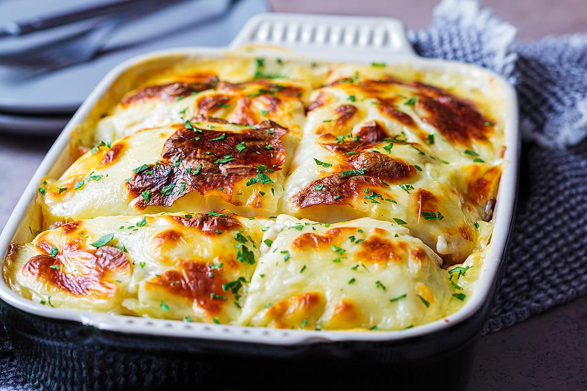

Moussaka recipe

Easy Moussaka Recipe: This Middle Eastern Casserole Recipe Is Heavenly
Moussaka is a savory casserole dish with Mediterranean and Middle Eastern origins. Moussaka is made with a ground meat, eggplant (sometimes potato) with a creamy béchamel sauce. The star of moussaka is usually eggplant (aubergines), and ground lamb is most often used, though many cooks do use ground beef. This creamy casserole recipe is popular in Greece and Turkey, and in the Balkans.
This easy moussaka recipe starts by broiling slices of eggplant until soft and golden. A meat sauce is then prepared using onion, ground lamb or beef, oregano, cinnamon, nutmeg, paprika, red wine, canned diced tomatoes, a little sugar and beef broth. The simple béchamel sauce is a creamy combination of olive oil, flour, nutmeg and eggs. The ingredients are layered in a casserole dish and baked to perfection.
Prep Time: 30 minutes
Cook Time: 1 1/2 hours
Servings: 6
Ingredients
- 2 large eggplant, ends trimmed and sliced lengthwise into 1/4-inch-thick slices
- olive oil
- 1 onion, finely chopped
- 1 pound ground lamb or ground beef
- 1 tablespoon dried oregano
- 1 teaspoon ground cinnamon
- 1/2 teaspoon ground nutmeg
- 1/2 teaspoon paprika
- 1/2 cup red wine
- 1 can (14 ounces) diced tomatoes
- 1 teaspoon granulated sugar
- 1/2 cup beef broth
Béchamel Sauce
- 1/3 cup plus 2 tablespoons olive oil
- 2/3 cup flour
- dash of nutmeg
- 4 cups milk, warm
- 2 eggs
Here's how to make it:
- Put the eggplant into a colander and sprinkle with salt. Let it sit for about 30 minutes. Dry the eggplant with paper towels and then layer them onto an oiled baking sheet in a single layer. Brush with olive oil. Broil the eggplant until soft and golden. Remove and set aside.
- To make the meat sauce, heat a little olive oil in a skillet. Add the onions and cook until soft and turning golden brown, about 5 minutes. Add the ground meat and cook until browned and cooked through, about 5 minutes. Drain excess fat. Add the oregano, cinnamon, nutmeg, paprika and black pepper, to taste. Cook, stirring, for 1 minute. Pour in the wine and cook over high heat for 1 minute. Stir in the diced tomatoes, sugar and beef broth. Reduce heat and simmer gently for about 20 minutes. Season with salt and pepper.
- To make the béchamel sauce, heat the olive oil over medium-high heat. Whisk in the flour and season with salt and pepper. Cook, stirring, until golden. Slowly pour in the warm milk, whisking constantly. Cook over medium heat for about 5 to 6 minutes. Add the nutmeg. Crack the eggs into a bowl. Add some of the béchamel sauce to temper the eggs, then add them to the pan. Bring to a gentle simmer and cook about 2 minutes. Add more salt and pepper, if needed. Remove from the heat.
- To assemble, put half of the eggplant slices into an oiled 13x9-inch baking dish. Cover with the meat sauce. Top with the remaining eggplant. Pour the béchamel sauce over the top. Bake in a preheated 350-degree F oven for about 45 minutes. (If you want to top darker, broil it for a couple minutes. Do not walk away!) Let the casserole sit for at least 10 minutes before serving.
See oter recipes!